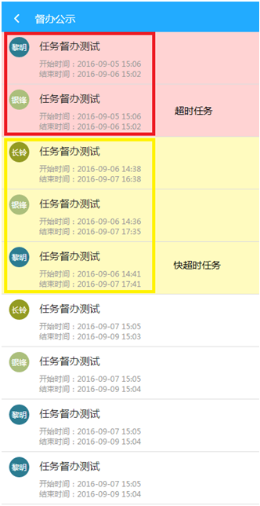
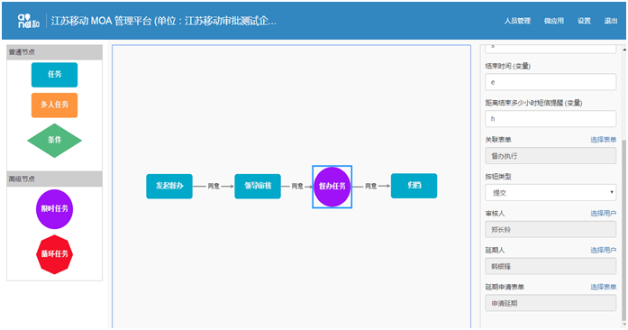

江苏移动ICT 2016-09-10
是不是还在为针对下发的任务，办理人却迟迟没有推进而烦恼呢？不要愁，V网通移动审批推出“督办”功能，确保公司重要工作部署保质保量完成。
“督办公示”领导和全体经办人都可看到，做的快慢好坏可真的不一样哦，超时任务置顶标红，接近超时任务标黄提醒。
督办任务可以选择主办人和协办人，不怕没人帮着完成。可以设置到期提醒时间，短信和V网通消息将告诉办理人该快点完成任务了。
功能强大不代表配置复杂，一个督办任务只需简单几步配置即可轻松完成。要是时间不够还可以申请延期。不过要想督办完成，还得通过审核人员严格审核。
功能试用赶紧联系：郑长岭 15050561902
2016-08-30-日志日报产品说明
2016-05-30-移动审批产品说明
V网通移动审批让移动办公更高效